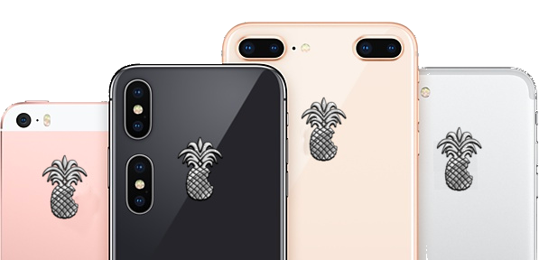
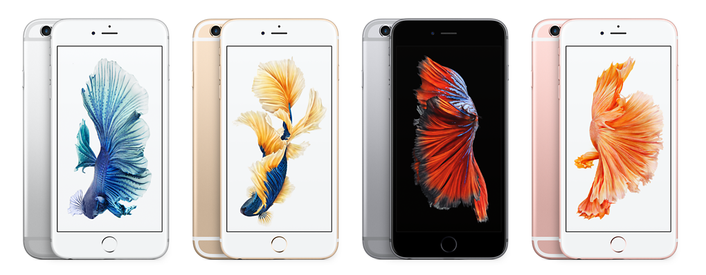

Face au succès de PineApple, la presse réagit régulièrement en publiant des articles des plus élogieux, prouvant à la foi la robustesse,
la qualité et les prix attractifs de nos produits. Nous avons recensé pour vous les meilleurs
articles écrits sur la société et sur ses produits, afin de soutenir votre choix pour la marque. Ces articles sont les articles originaux, tels qu'ils sont parus
dans les journaux, nous vous garantissons donc leur authenticité (à 70%). Bienvenue sur la page presse !
Consulter les témoignages de nos clients
Le Monde à l’envers :
"PINEAPPLE LANCE UN PAVÉ DANS LA MARE DES TÉLÉPHONES !
Pineapple. Cette marque vous a surement interpellé au moins une fois que ce soit de vos collègues qui en font l’éloge ou de vos enfants qui ne jurent que par
Pineapple. En effet, avec son nouveau téléphone le Pineapple PD5 Phone, le géant du mobile défie ses concurrents avec de nouvelles fonctionnalités, un nouveau
design et des prix imbatables.
Nous nous sommes penchés sur le cas Pineapple et voici ce que nous avons découvert : ce serait plus d’un million de chinois qui
seraient engagés comme sous-traitants.
C’est dans des caves du futur avec non pas une mais deux lumières pour les éclairer, que l’entreprise a décidé de faire travailler sa main d’oeuvre, sans doute
le secret de ce succès.
Mais l’entreprise ne s’arrête pas là ! Puisque son directeur, Yael.M a promis plus encore pour son prochain projet déjà en cours de développement qui sera le
Pineapple XXICVX en hommage au XXICVXième anniversaire de la marque.
Nous avons eu la chance de pouvoir interviewer cet homme au destin incroyable, maintenant première fortune mondiale qui nous a déclaré : “ Le Pineapple PD5
phone est plus qu’un téléphone. Ce sera non seulement un ami pour vous mais aussi votre conseiller bancaire, votre cuisinier, votre technicien de surface et
votre éducateur pour enfant. Il a de nouvelles fonctionnalités qui servent tous les jours ! C’est vrai, après tout qui n’a jamais voulu cuire des oeufs avec
son téléphone. Je crois que c’est pour cela que notre entreprise se porte bien, nous ajoutons des fonctionnalités que notre clientèle nous demande depuis
longtemps parce que nous, nous sommes à votre écoute. Je suis talentueux et je le sais.”

Un article de Jean Népamar-Dachté
Le Canard Déchainé :
"ENFIN UN TÉLÉPHONE DIGNE DE CE NOM !"
C’est avec plaisir que Pineapple nous dévoile enfin son tout nouveau téléphone. On se rappelle que l’ancien modèle, le PD4 Phone, sorti il y a déjà deux mois
était déjà bien dépassé par la technologie annoncé lors du dévoilage du Pineapple PD5 Phone. Ce nouveau téléphone, fleuron de la technologie Picarde, possède
de nouvelles fonctionnalités qui vont vous faire instantanément regretter de ne pas en avoir un. Ses détracteurs essaient tant bien que mal de trouver des
défauts au PD5 Phone mais ce n’est pas chose aisé. Le concurrent principal de Pineapple, Pamplemousse, aurait déclaré ce matin : “ Ce n’est pas avec un tel
prix que ce téléphone pourra être compétitif … Un tel prix cassé cache forcément quelque chose.”
Le vice-président de Pineapple, Damien.D leur a répondu de façon plutôt amusée via le Canard Déchaîné : “ Ma foi, c’est gentil de la part de M.Rouy (
le PDG de Pamplemousse ndlr) de nous faire de la publicité gratuite. Je lui ferai une réduction de 2% sur le PD5 Phone la prochaine fois qu’il vient nous voir.
Allez salut les zinzons ! “

Oui, ce sont des iPhones mais le responsable presse était à court de photos.
Un article de Vincent Timme
Le Figue à rot :
"PINEAPPLE PD5 PHONE, IL VA VOUS ÉTONNER !"
Avec déjà 90% du marché des téléphones cellulaires portatifs, Pineapple sort son PD5 Phone : le bijou de technologie du siècle. Scanner rétinien, détecteur de chaleur corporelle personnelle et hologrammes n’attendent que vous dans ce téléphone qui risque encore de gravir la première place au CAC 40. Ce pari innovant de retrouver des anciennes technologies va aussi séduire les plus âgés d’entre vous qui êtes sans doute dépassés par la nouvelle génération de téléphone. Ainsi vous pourrez retrouver dans votre PD5 un minitel, un walkman, un télégramme, un lecteur de disquettes et un magnétoscope. L’artiste Réunionnais MSeaWill a même sorti un single à l'occasion de comme il l’appelle “ le tournant de l’humanité en matière de téléphone “.
Le Figue à rot s’est interrogé sur le succès de cette entreprise basé à sa création sur la production d’huile d’olive et des réponses ont été trouvées lors de la conférence de presse réalisée en vue de la sortie du PD5. Vous pouvez retrouver les réponses aux questions sur leur site à l’onglet FAQ.
Un article de Morgane Hah
Barthélémy P.
PineApple NewYork
Ligne directe: 066 66 66 66 66
frerotultime@pineapple.com